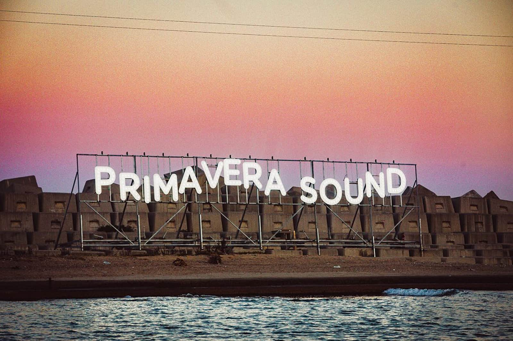

¿Quiénes somos?

Ya hace dos décadas que Primavera Sound empezó a construir su compromiso inquebrantable con la música en directo con Barcelona como epicentro de una oferta que hace tiempo que es global, multidisciplinar y disfrutable durante todo el año. Todo un universo propio que gira alrededor de la personalidad inconfundible de Primavera Sound, festival que alcanza su vigésimo aniversario en 2020. Desde sus primeros pasos como evento de una jornada en el Poble Espanyol hasta su actual estatus de cita de repercusión internacional que convierte las ciudades que acogen el festival en capital mundial de la música durante cinco días, ha sido narrador musical de su momento y su lugar con unos carteles inimitables. Pulp, The White Stripes, Sonic Youth, Mogwai, Belle & Sebastian, Pixies, PJ Harvey, Primal Scream, Wilco, Lou Reed, Motörhead, Patti Smith, Public Enemy, Portishead, Pavement, Cat Power, Vampire Weekend, Neil Young, Pavement, The xx, Sufjan Stevens, Pet Shop Boys, Jeff Mangum, The Cure, A$AP Rocky, Blur, The Postal Service, Marianne Faithfull, Tame Impala, Arcade Fire, Nine Inch Nails, Kendrick Lamar, The Strokes, The Replacements, Tyler, The Creator, Radiohead, Wu-Tang Clan, LCD Soundsystem, Brian Wilson, Bon Iver, Arctic Monkeys, Lorde, Björk, Nick Cave & The Bad Seeds, Erykah Badu, Rosalía, J Balvin, Solange o Janelle Monáe son solo algunos de los nombres que han marcado hasta ahora la historia de un festival que ya mira hacia su vigésima edición.
Siguenos en nuestras redes sociales: